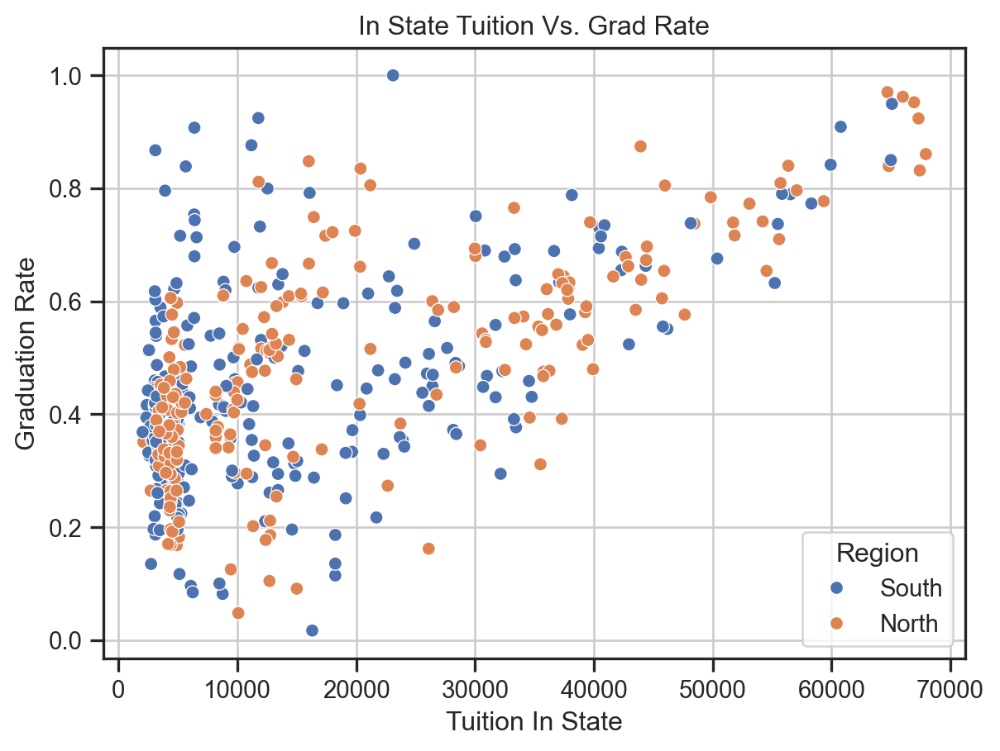
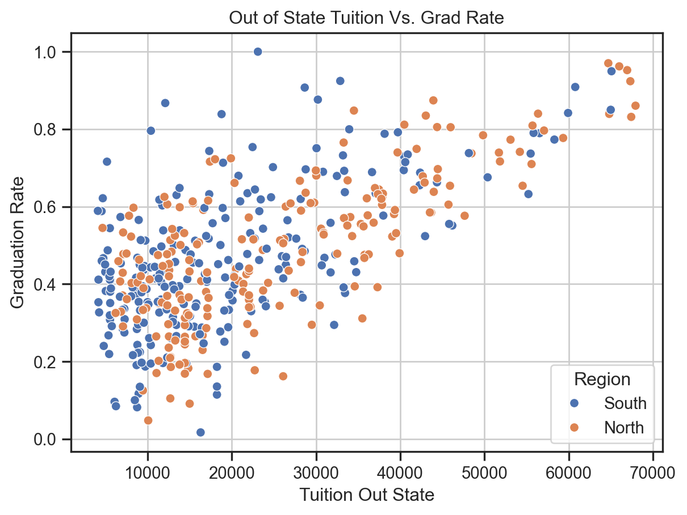

| Student_Size | Tuition_In_State | Tuition_Out_State | Female_Share | Race_White | Race_Black | Race_Hispanic | Race_Asian | Race_AIAN | Race_NHPI | Race_Two_Or_More | Grad_Rate | School_Name | City | State | id | July_Estimate_2024 | Region | |
|---|---|---|---|---|---|---|---|---|---|---|---|---|---|---|---|---|---|---|
| 0 | 5726.0 | 10024.0 | 18634.0 | 0.564030 | 0.0180 | 0.9043 | 0.0150 | 0.0017 | 0.0012 | 0.0010 | 0.0182 | 0.2772 | Alabama A & M University | Normal | AL | 100654 | 2381817.0 | South |
| 1 | 12118.0 | 8832.0 | 21864.0 | 0.639091 | 0.4832 | 0.2657 | 0.0776 | 0.0915 | 0.0020 | 0.0007 | 0.0515 | 0.6345 | University of Alabama at Birmingham | Birmingham | AL | 100663 | 2381817.0 | South |
| 2 | 226.0 | NaN | NaN | 0.648649 | 0.2788 | 0.6681 | 0.0310 | 0.0000 | 0.0044 | 0.0044 | 0.0000 | NaN | Amridge University | Montgomery | AL | 100690 | 2381817.0 | South |
| 3 | 6650.0 | 11770.0 | 24662.0 | 0.476350 | 0.6940 | 0.0907 | 0.0719 | 0.0423 | 0.0074 | 0.0015 | 0.0508 | 0.6240 | University of Alabama in Huntsville | Huntsville | AL | 100706 | 2381817.0 | South |
| 4 | 3322.0 | 11248.0 | 19576.0 | 0.613419 | 0.0223 | 0.9082 | 0.0111 | 0.0018 | 0.0015 | 0.0012 | 0.0126 | 0.2884 | Alabama State University | Montgomery | AL | 100724 | 2381817.0 | South |
Data Aquisition Blog Post
U.S. Colleges and Graduation Rates
An analysis of 1,000 U.S. colleges graduation rates.
Introduction
The purpose of this blog is to show an in depth analysis of the affects on graduations rates of U.S. colleges. The analysis studies 1,000 colleges with information on student size, tuition prices, diversity, region, and graduation rates. Studying this information could be useful in determining what factors help students graduate. Those inquiring about a future college career could use the information when deciding where to attend school.
Education is crucial for societal purposes. Education allows people to become evolved thinkers, be active participants in society, and the economy. Learning what factors help students graduate could help increase overall graduation rates. While this analysis does give some insight on what influences graduation rates, this information should not be used and cited as this is not an official analysis.
Motivation
From this analysis it is my hope that I learn more about the data cleaning process and analysis. I am hoping to gain a better understanding of demographics from different colleges across the nation.
With these goals I also hope to provide insight on the dataset created.
Ethical Data Practices
The data is acquired from the U.S. Census Bureau and the College Scorecard by the U.S. Department of Education.
Data gathered from the U.S. Census Bureau and College Scorecard is allowed because it is public data. Anyone can access the data as long as it is not used to identify any individual person, household, business or other entity. The Bureau also requests that the following disclaimer be made: “This product uses the Census Bureau Data API but is not endorsed or certified by the Census Bureau.”
Using these guidelines I was able to determine that use of this data for the purpose of my research question was ethical. I acquired API keys specifically assigned to myself and these keys were not published and cannot be accessed via the cleaning process and exploratory data analysis.
A Short Note on Acquiring the Data
This analysis uses one datasets that has been cleaned and merged from two datasets, one with information about colleges, the other about state populations.
The U.S. Census Bureau and College Scorecard have in depth information about downloading data, acquiring, and use of APIs and keys. To get started follow the instructions on those sites. Once you have the two different datasets, clean them and merge to get one dataframe that includes the following columns:
- Student_Size
- Tuition_In_State
- Tuition_Out_State
- Female_Share
- Race_White
- Race_Black
- Race_Hispanic
- Race_Asian
- Race_AIAN
- Race_NHPI
- Race_Two_Or_More
- Grad_Rate
- School_Name
- City,State
- id
- July_Estimate_2024
- Region
EDA Highlights
Summary Statistics
The table above shows the first few row of the data, this gives us an idea of what variable we are working with. For the purpose of this analysis we will be looking at what variables affect graduation rates.
| Student_Size | Tuition_In_State | Tuition_Out_State | Female_Share | Race_White | Race_Black | Race_Hispanic | Race_Asian | Race_AIAN | Race_NHPI | Race_Two_Or_More | Grad_Rate | id | July_Estimate_2024 | |
|---|---|---|---|---|---|---|---|---|---|---|---|---|---|---|
| count | 937.000000 | 726.000000 | 726.000000 | 863.000000 | 937.000000 | 937.000000 | 937.000000 | 937.000000 | 937.000000 | 937.000000 | 937.000000 | 878.000000 | 1000.0000 | 9.880000e+02 |
| mean | 4894.967983 | 16561.304408 | 21765.334711 | 0.605576 | 0.398195 | 0.166731 | 0.256833 | 0.057257 | 0.009128 | 0.003922 | 0.043904 | 0.506051 | 126723.1950 | 7.947942e+06 |
| std | 8109.876927 | 17451.585148 | 15443.426078 | 0.140958 | 0.237496 | 0.201430 | 0.208431 | 0.086143 | 0.040523 | 0.009823 | 0.043415 | 0.199975 | 15159.9182 | 5.400004e+06 |
| min | 2.000000 | 1104.000000 | 1410.000000 | 0.025592 | 0.000000 | 0.000000 | 0.000000 | 0.000000 | 0.000000 | 0.000000 | 0.000000 | 0.016700 | 100654.0000 | 3.304630e+05 |
| 25% | 375.000000 | 3372.000000 | 9882.500000 | 0.543774 | 0.194500 | 0.040600 | 0.092100 | 0.009900 | 0.000900 | 0.000000 | 0.019600 | 0.347400 | 112439.7500 | 3.026199e+06 |
| 50% | 1614.000000 | 9343.000000 | 15746.000000 | 0.598770 | 0.398600 | 0.090700 | 0.200000 | 0.026200 | 0.002500 | 0.001300 | 0.037500 | 0.487700 | 127171.5000 | 5.482770e+06 |
| 75% | 5697.000000 | 26268.750000 | 30407.250000 | 0.665277 | 0.590500 | 0.200000 | 0.368500 | 0.064900 | 0.005900 | 0.003500 | 0.055300 | 0.652075 | 139988.2500 | 1.487790e+07 |
| max | 68619.000000 | 68237.000000 | 68237.000000 | 0.978996 | 0.993600 | 1.000000 | 1.000000 | 1.000000 | 0.990700 | 0.100000 | 0.431900 | 1.000000 | 151388.0000 | 1.487790e+07 |
The table above shows summary statistics for each variable in the dataframe.
The following table is the count of N/A values after taking the averages of graduation rate, in state tuition, and out of stat tuition for each state and filling the na values with those mean values. Note there are still some unknown values for the categorical values.
| Variable | Count |
|---|---|
| Student_Size | 63 |
| Tuition_In_State | 1 |
| Tuition_Out_State | 1 |
| Female_Share | 137 |
| Race_White | 63 |
| Race_Black | 63 |
| Race_Hispanic | 63 |
| Race_Asian | 63 |
| Race_AIAN | 63 |
| Race_NHPI | 63 |
| Race_Two_Or_More | 63 |
| Grad_Rate | 1 |
| School_Name | 0 |
| City | 0 |
| State | 0 |
| id | 0 |
| July_Estimate_2024 | 12 |
| Region | 374 |
The following table is the count of occurrences for each state. Note that there is not data on all of the states in the U.S. this is due to the amount of data pulled from the API, only 1,000 schools were accounted for in the data, therefore the data will be skewed.
| State | Count |
|---|---|
| AK | 8 |
| AL | 55 |
| AR | 58 |
| AZ | 40 |
| CA | 313 |
| CO | 51 |
| CT | 35 |
| DC | 12 |
| DE | 8 |
| FL | 122 |
| GA | 78 |
| HI | 12 |
| ID | 14 |
| IL | 156 |
| IN | 35 |
| MN | 1 |
| NM | 1 |
| NY | 1 |
There are many more schools to account for however this data is still useful.
The data for the northern and southern regions have about the same amount of observations.
| Region | |
|---|---|
| North | 293 |
| South | 333 |
Next we can compute the mean graduation rate for each state in the dataset.
| State | Mean Graduation Rate |
|---|---|
| AK | 0.491314 |
| AL | 0.396898 |
| AR | 0.462617 |
| AZ | 0.428985 |
| CA | 0.525233 |
| CO | 0.517437 |
| CT | 0.625406 |
| DC | 0.654925 |
| DE | 0.493286 |
| FL | 0.551218 |
| GA | 0.435044 |
| HI | 0.410892 |
| ID | 0.520750 |
| IL | 0.511828 |
| IN | 0.534775 |
| MN | NaN |
| NM | 0.537000 |
| NY | 0.125000 |
It is interesting to note that the District of Columbia, which is a territory has the highest graduation rate, with Connecticut following as a close second. Again we really can’t pull reliable inferences from this since the sample sizes are skewed, especially since New York, which has some of the most prestigious universities in the country, has the lowest graduation rate and only one singular occurrence in the dataset.
We can run a regression model on the following variables and see if any are statistically significant.
| Term | Coefficient |
|---|---|
| Intercept | 0.28883021499055983 |
| Student_Size | 2.19323220e-06 |
| Tuition_In_State | -2.38317495e-06 |
| Tuition_Out_State | 1.14899535e-05 |
| Region_numeric | -3.72713468e-02 |
| Metric | Value |
|---|---|
| Mean Squared Error | 0.020479592983903977 |
| R-squared | 0.2711396143816296 |
We cannot pull inference from this model, however it is interesting to see if there is an interaction between certain variables.
Plots

The plot above shows in state tuition prices plotted against graduation rates, with the colors corresponding to north and south regions of the U.S. It is interesting to note that there appears to be a linear relationship between higher tuition prices and graduation rate.

We can plot the the relationship between out of state tuition and graduation rates as well. From the plot we again see that there appears to be a linear relationship between the variables.
The following boxplots can help gather more inference on graduation rates for the different states.

We can do the same for tuition prices, this plot uses out of state tuition data.

These highlights of the data help us understand that while more information and data is needed to pull reliable inferences, we can see that higher tuition prices could result in higher graduation rate in U.S. colleges.
Resources
Code Links
Fork the repository below to view the code used to create and merge the datasets, as well as the EDA process.
Disclaimers
This product uses the Census Bureau Data API but is not endorsed or certified by the Census Bureau.